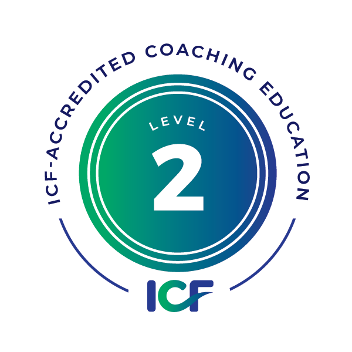
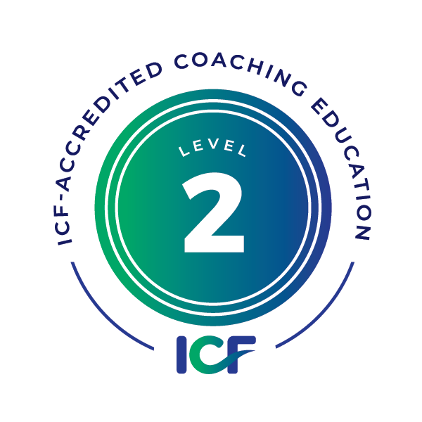
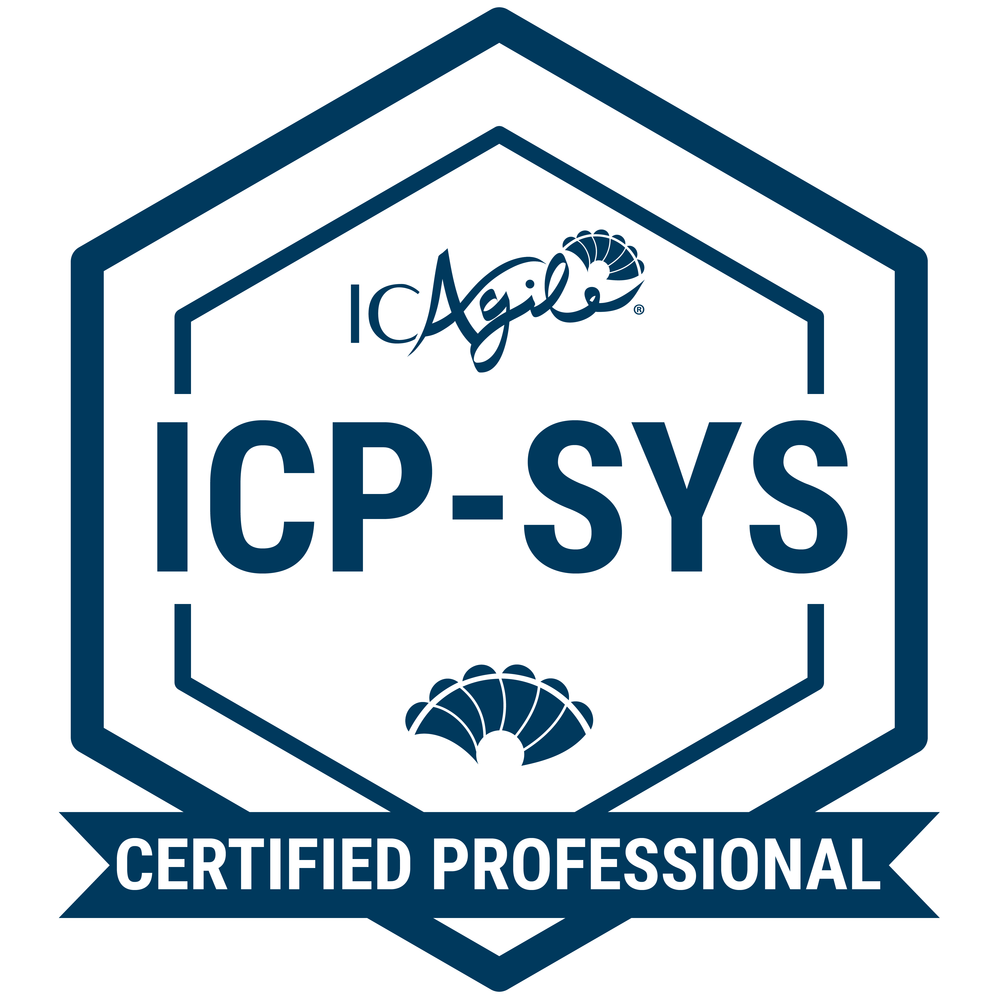
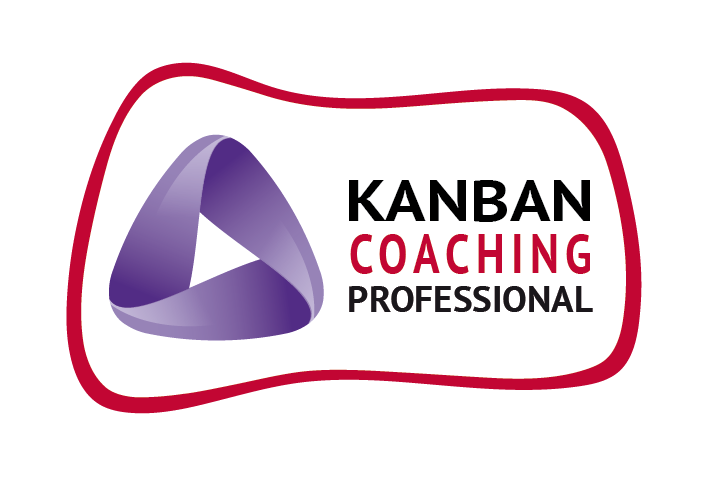
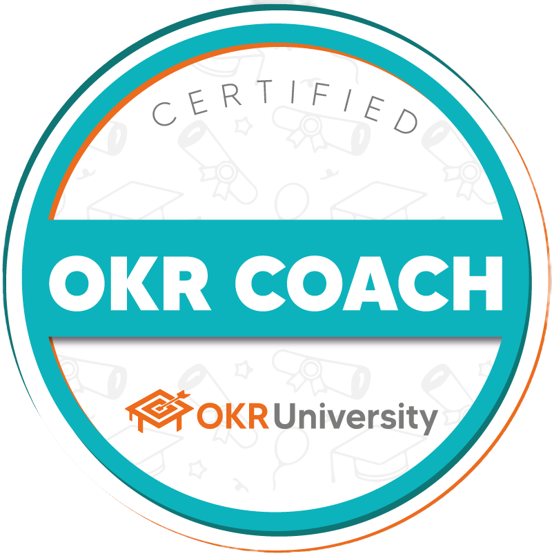
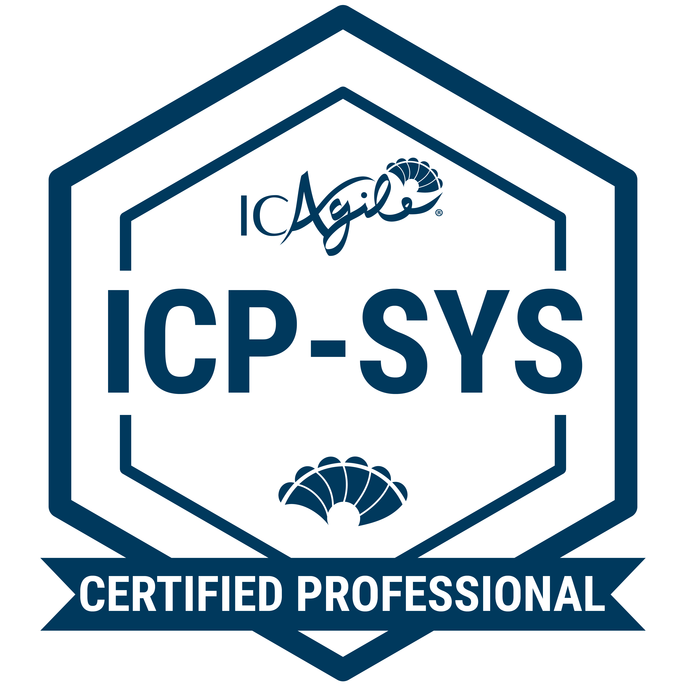
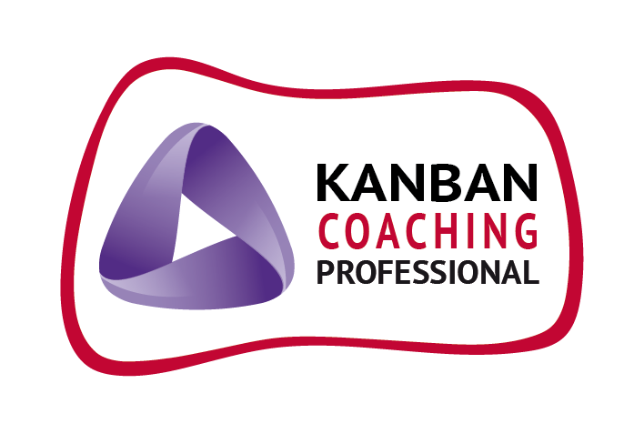
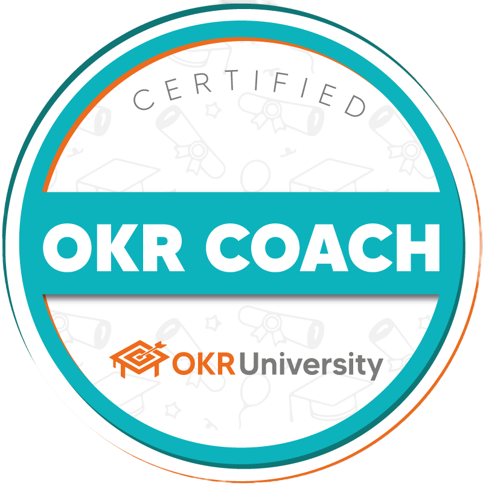

OKRs: la brújula del liderazgo
Cómo usar OKRs para orientar foco y aprendizaje continuo.
Leer en LinkedIn →Dejo de lado el *management* y me enfoco en el **Coaching de Ejecución**. Instalo **foco, cadencia y liderazgo sistémico** para que tus resultados sean sostenibles.
 

 






Más de 20 años entre negocio y tecnología. Combino coaching ontológico (ICF Level 3 en curso) con marcos de Agilidad (Scrum, Kanban, OKRs) y pensamiento sistémico (Agile Coach y Agile System Coach). Miembro de ICF Panamá y co-mentor en la Escuela Internacional de PNL y Coaching. Colaboro con ONGs en proyectos de impacto.
Objetivo 2025: credenciales ICF ACC/PCC. Integro IA generativa a nivel no-code para mejorar foco, cadencia y toma de decisiones.
Coaching ejecutivo y de equipos para clarificar propósito, fortalecer hábitos de ejecución y desarrollar capacidades que habiliten cambios culturales sostenibles.
Implementación pragmática de OKRs y Kanban para crear foco, flujo y cadencia; alineación de objetivos con métricas y aprendizaje continuo.
Diagnóstico sistémico y acompañamiento en cambios de estructura (p. ej., unFIX), gestión del cambio (Lean Change Management) y prácticas de Management 3.0.
Líderes (CEOs, directores, founders, managers) que necesitan flexibilidad, foco y cadencia para ser catalizadores del cambio.
Equipos que requieren Agilidad, objetivos alineados, resultados medibles y mejora continua.
Organizaciones que buscan alinear estructura, liderazgo y cultura con ejecución sustentable.
Reunión gratuita para entender el punto exacto donde la ejecución falla, con un **plan de acción concreto** para los próximos 7 días.
Sin costo
AgendarIntervención corta (3-4 semanas) para **instalar foco, cadencia y un tablero de resultados** funcionando. Formato 'Muestra' con entregables claros.
Explorar precios
ExplorarPrograma de **Coaching ejecutivo 1:1** (3-6 meses) para escalar la ejecución y el liderazgo. Incluye OKRs avanzados y métricas de impacto.
Plan personalizado por objetivos.
ConversarUna guía breve para diseñar objetivos con foco, evidencias y aprendizaje.
Cómo usar OKRs para orientar foco y aprendizaje continuo.
Leer en LinkedIn →Por qué limitar el WIP y visualizar el trabajo mejora resultados.
Leer en LinkedIn →Sesgos invisibles que erosionan decisiones y colaboración.
Leer en LinkedIn →Coordinemos una reunión de 30 minutos o contácteme por e-mail.